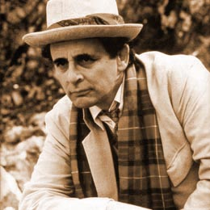

|  |
The seventh Doctor was portrayed by Sylvester McCoy. When the Doctor is critically injured, he can regenerate his body; in doing so, his physical appearance and personality change. McCoy portrays the seventh such incarnation, a whimsical, thoughtful character who quickly becomes more layered, secretive and manipulative. The Seventh Doctor first appeared on TV in 1987. After the programme was cancelled at the end of 1989, the Seventh Doctor's adventures were continued in novels until the late 1990s. The Seventh Doctor made an appearance at the start of the 1996 movie before the character was replaced by the Eighth Doctor. |